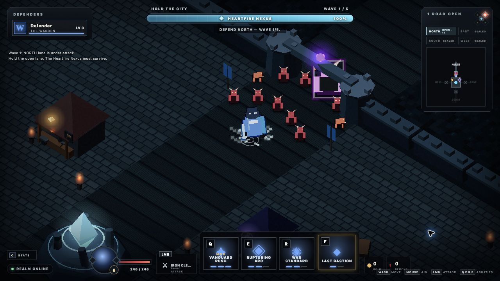

Hold the city
The Heartfire Nexus is always the objective. Gates may fall; the run ends only when the city loses its heart.
SIEGEHEART DEVELOPMENT COMPANION
A 1–4 player dark-fantasy action RPG about defending the Heartfire Nexus, surviving the breach, and carrying the fight back through the invasion rift.
Playable game hosting remains pending a configured Bun/WebSocket host.
LATEST VERIFIED CHECKPOINT · 0.1.25
Combat Stride now lets the existing cyan Fleetstep echo separate into one restrained step during moving Attuned primary attacks.
FROM 0.1.24 Hold Your Place reconnection, fingerprinted production assets, Combat Stride, truthful reforges, readable commitment, exact primary and cast consequences, hero-centered receipts, funded routes, two physical shops, four wares, six unrestricted run-only sockets, and authoritative Attunement remain intact.

The Heartfire Nexus is always the objective. Gates may fall; the run ends only when the city loses its heart.
Warden, Riftstalker, Ashcaller, and Gravebinder share one control grammar while changing how every horde is solved.
Survive the breach, stabilize the Nexus, then push together through the north road and destroy the Rift Heart.